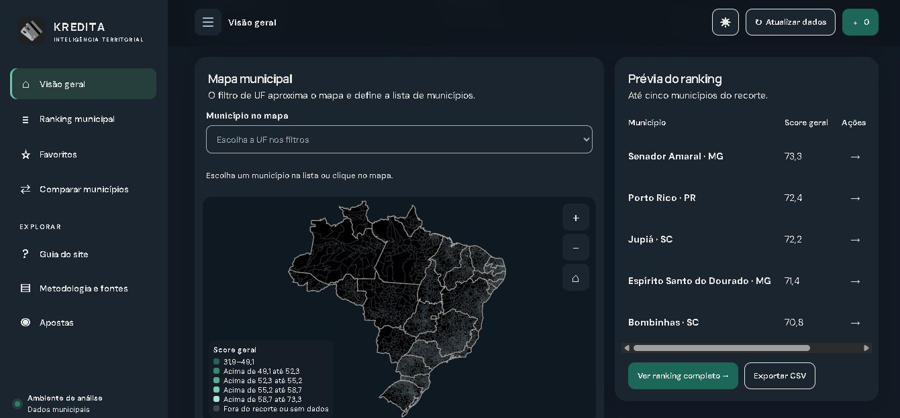

Meus Projetos
Projetos API e pessoais
Projetos API (Aprendizagem por Projetos Integrados)
Crédito Inclusivo: KREDITA (grupo Print)
Projeto acadêmico da disciplina API, desenvolvido no 1º semestre do curso. Trabalho em grupo, com score territorial municipal e ranking regional.
- Empresa parceira
- Empresa representada pelo professor Fernando Masanori (P2).
- Minhas contribuições
- Integrante do Dev Team, responsável pelo notebook no Google Colab (ProcessadorDeDadosKREDITA) e parte do front-end.
- Hard skills
- Python e processamento de dados no Colab; HTML, CSS e Bootstrap no front-end; Git e GitHub.
- Soft skills
- Trabalho em equipe, comunicação, organização, resolução de problemas e responsabilidade.

Projetos pessoais
Artes da Ivone
Site de artesanato em HTML, CSS e Bootstrap. Desenvolvido na disciplina de Design Digital, no 1º semestre do curso.
Competências: HTML semântico, CSS, Bootstrap e design responsivo.
Abrir o site